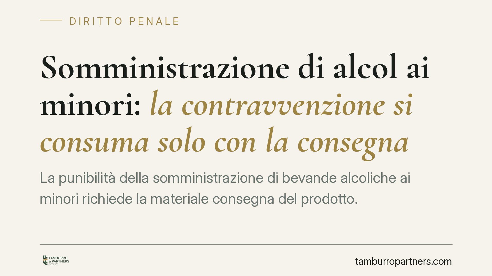

Somministrazione di alcol ai minori: la contravvenzione si consuma solo con la consegna
La punibilità della somministrazione di bevande alcoliche ai minori richiede la materiale consegna del prodotto. Trattandosi di contravvenzione, non è configurabile il tentativo: se l'intervento delle forze dell'ordine blocca la consegna, il fatto non è penalmente rilevante. Restano però il piano amministrativo e la posizione del titolare del locale, che vanno tenuti distinti.

Il fatto e la questione giuridica
La questione riguarda il momento in cui si perfeziona il reato di somministrazione di bevande alcoliche a un minore. Il punto è tutt'altro che teorico: se un barista prepara il drink ma l'intervento della polizia ne impedisce la consegna al minore, si è già in presenza di un fatto penalmente rilevante, oppure no?
La risposta dipende dalla natura del reato e dalla sua struttura. E qui occorre distinguere con precisione i piani, perché la disciplina dell'alcol ai minori vive su un doppio binario: quello penale e quello amministrativo.
Inquadramento normativo: art. 689 c.p.
Sul piano penale rileva l'art. 689 del codice penale, che punisce l'esercente di un'osteria o di altro pubblico spaccio di alimenti o bevande che somministra bevande alcoliche a un minore degli anni sedici o a persona che appaia affetta da malattia di mente o che si trovi in manifesto stato di ubriachezza.
Due elementi vanno sottolineati.
Primo: la norma è una contravvenzione, non un delitto. La distinzione non è nominalistica. Le contravvenzioni sono i reati puniti con l'arresto o l'ammenda (art. 17 c.p.), i delitti quelli puniti con reclusione, multa o pene più gravi. Questa qualificazione ha conseguenze dirette sulla configurabilità del tentativo.
Secondo: la condotta tipizzata è la *somministrazione*, cioè la messa a disposizione del prodotto in favore del destinatario. Non basta la preparazione o l'offerta: serve la consegna materiale della bevanda al minore.
Perché il tentativo non è configurabile
L'art. 56 c.p. disciplina il delitto tentato: risponde chi compie atti idonei, diretti in modo non equivoco a commettere un delitto, se l'azione non si compie o l'evento non si verifica. La norma parla espressamente di *delitto*.
Ne deriva un principio consolidato: il tentativo non è configurabile nelle contravvenzioni. La legge non estende ad esse la punibilità degli atti che precedono la consumazione.
La conseguenza pratica è netta. Se la condotta di somministrazione non giunge alla consegna della bevanda al minore, il reato dell'art. 689 c.p. non si consuma e, non essendo ammesso il tentativo, non vi è fatto penalmente perseguibile. L'intervento delle forze dell'ordine che blocca il drink prima del passaggio di mano incide proprio su questo confine.
Il doppio binario e la posizione del titolare
Escludere il reato penale non significa che la vicenda sia priva di conseguenze. Sul piano amministrativo opera un divieto autonomo: la somministrazione o vendita di bevande alcoliche ai minori di diciotto anni è vietata e sanzionata in via amministrativa. Il riferimento è all'art. 14-ter della legge 30 marzo 2001, n. 125 (legge quadro in materia di alcol), articolo introdotto dall'art. 7 del D.L. 13 settembre 2012, n. 158 (cosiddetto decreto Balduzzi), convertito con modificazioni dalla legge 8 novembre 2012, n. 189.
È importante coglierne la portata: il divieto amministrativo alza la soglia a diciotto anni e prevede una sanzione pecuniaria (con possibile sospensione dell'attività nei casi più gravi), operando anche laddove la fattispecie penale non risulti integrata. Penale e amministrativo restano quindi distinti per soglia d'età, per struttura e per conseguenze.
Quanto alla responsabilità del titolare del locale, non opera un automatismo per i fatti materialmente commessi dai dipendenti. La responsabilità penale è personale (art. 27 Cost.) e, sul versante omissivo, l'art. 40, comma 2, c.p. richiede un obbligo giuridico di impedire l'evento: la posizione dell'esercente va valutata in concreto, sulla base della sua condotta e degli obblighi organizzativi effettivamente gravanti su di lui.
Implicazioni pratiche
Per chi gestisce un pubblico esercizio, il quadro impone attenzione su tre fronti: il momento della consegna, la formazione del personale e la tracciabilità delle procedure interne di controllo dell'età. La linea di confine penale/amministrativo è sottile e la posizione del titolare dipende da come è organizzata l'attività, non da presunzioni.
Cosa fare in concreto
- Adottare procedure interne scritte per la verifica dell'età (controllo documento in caso di dubbio) e renderle vincolanti per il personale.
- Documentare la formazione dei dipendenti sul divieto di somministrazione, con date e contenuti verificabili.
- Esporre in modo visibile il divieto di vendita e somministrazione di alcolici ai minori.
- Conservare ogni evidenza organizzativa utile a dimostrare la diligenza dell'esercente.
- In caso di contestazione, acquisire subito verbali e documentazione e valutare l'assistenza legale prima di rendere dichiarazioni.
Contributo informativo a cura di Tamburro & Partners - Avv. Giuseppe Tamburro. Non costituisce parere legale.
Ogni condominio ha una storia a sé.
Se gestisci un'amministrazione e vuoi un confronto su una specifica questione condominiale, scrivi allo studio. Ti rispondiamo entro un giorno lavorativo.